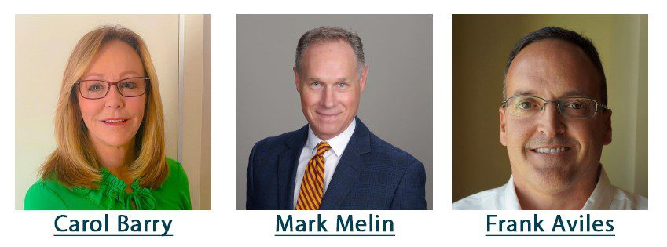

The Save A Leg, Save A Life Foundation Welcomes New Board Members

Dr. M. Mark Melin, Frank Aviles and Carol Barry Elected to Board of Directors
M. Mark Melin MD FACS RPVI FACCWS, is a surgeon and Medical Director of the M Health Wound Healing Institute, and an Adjunct Associate Professor in the University of Minnesota Surgical Department. His many interests and educational niches include management of lymphedema in the wounded patient, emerging technologies in wound products and wound technologies, and research and educational activities within the Wound Healing Institute and at regional and national meetings. Dr. Melin completed his General Surgery residency and Vascular Fellowship at the Mayo Clinic in Rochester Minnesota.
Carol Barry is a National Accounts Manager at Organogenesis, Inc. She has been in wound care since 1998, concentrating on prevention and management of chronic wounds, and more recently on advanced wound care and limb preservation. Ms. Barry organizes educational programs for providers and clinicians among multiple specialties in a variety of health care settings including private practice, acute care, outpatient clinics, home health and palliative care. Carol has volunteered within The Save a Leg, Save a Life Foundation in a variety of capacities since its inception. Most recently, she has been instrumental in developing and organizing SALSAL's community screening events.
In 2021, Francisco ("Frank") Aviles, Jr., P.T., CWS, FACCWS, CLT-LANA, ALM, AWCC, MAPWCA joined the Board of Directors, bringing decades of experience in physical therapy, wound care, and lymphedema. He is currently the Wound Care Clinical Coordinator at Natchitoches Regional Medical Center, and a wound care consultant for Cane River Therapy Services and Louisiana Extended Wound Care Hospital. Frank serves on the editorial board for Today’s Wound Clinic and created educational opportunities such as The Wound Healing Roundtables and Virtual Wound Rounds while co-creating and hosting The Frank & Lizzie Show and Wound Busters.